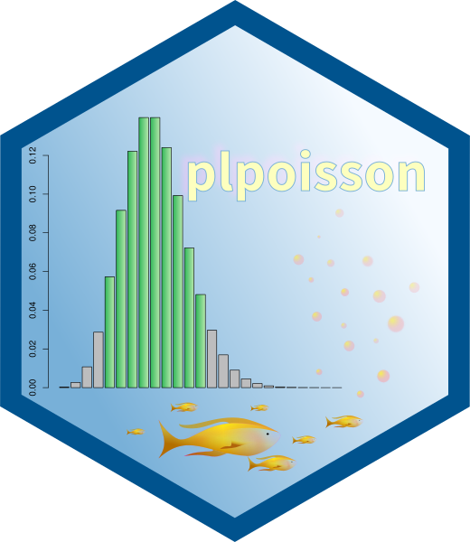
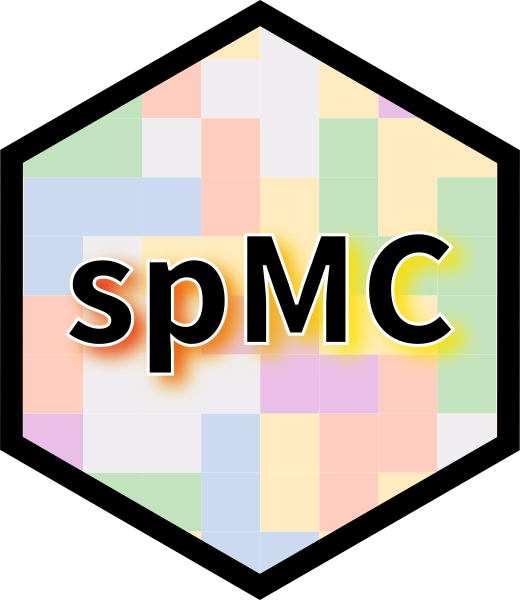

Biography
Luca Sartore is a Research Fellow II - Statistician for NISS, working with the National Agricultural Statistical Service (NASS). He has been involved with the estimation and calibration of the US Census of Agriculture. He worked on modelling livestock, yield, and acreage for major agricultural commodities using various data sources, and he has also developed methodologies for assessing uncertainties. His contribution on the automation of analytical systems has focused on machine learning, artificial intelligence, and high-performance computing. He received his master in Statistics from the Ca’ Foscari University of Venice (Italy) and Ph.D. from the University of Padua (Italy). After his Ph.D., he joined the European Centre for Living Technologies as a postdoc researching evolutionary algorithms in AI for one year in Venice (Italy).
Research Interests
My research interests encompass a range of topics within the field of statistics. I am particularly focused on high-performance computational statistics, spatiotemporal statistics (including estimation, prediction, and uncertainty quantification), regression methods, multivariate statistics, nonparametric and semiparametric statistics, which incorporate machine learning and artificial intelligence techniques. I also have experience in and proficiency with outlier detection, analysis of anomalous data, nonresponse adjustments, calibration weighting techniques (including methodologies for surveys and censuses), data privacy, and disclosure control procedures. I am proficient in modeling complex systems and signal processing.
Education
University of Padua, Italy
Ph.D. Statistics - Department of Statistics
Scholarship from the Università di Padova for PhD graduate studies from
2011-2013.
Research topic: Quantile Regression in Non-Linear Models for Rainfall
Data
Supervisor: Prof. Renato Guseo. Co-supervisor: Dr. Claudia Furlan.
University Ca’ Foscari of Venice,
Italy
M.S. Statistics for Business
Research topic: Geostatistical Models for 3-D Data.
Supervisor: Prof. Carlo Gaetan
Grade: 110/110 with honors
University Ca’ Foscari of Venice,
Italy
B.S. Statistics and Computer Science for Management
Research topic: Composite Likelihood Estimation for Geostatistical
Data.
Supervisor: Prof. Carlo Gaetan
Grade: 108/110.
Technical Strengths
Operative systems: Linux, Unix, Windows, OSX
Statistical software: R, Maxima, Julia, MATLAB/Octave, SAS, Mathematica, STATA
Programming: C, Python, Bash, C++, Qt, JavaScripts, Visual Basic .Net, VBScripts, Zig, Java, Fortran, GNU and Intel x64 Assembly, Pascal
Markup Languages: LaTeX, Markdown, Quarto, XML, HTML, CSS, ASP, reStructuredText
Information Systems: Google Earth Engine, QGIS, ArcGIS, SQL, MySQL, Oracle Databases
Other computer software: LibreOffice, MS Office, Git, ERDAS Imagine, Paraview
Other skills:
Cloud computing (Google Cloud, Amazon AWS, Microsoft Azure, and Databricks)
Parallel computing (OpenMP, SIMD, SLURM, and CUDA)
Quantum computing
Awards and Scholarships
2025. First-quarter award for significant contributions to the Conservation Data Team’s Cover Crop and Evaluation of Statistical Properties Sub-teams (Research and Development Division of USDA-NASS).
2024. Best poster award for Jacobsen, et al. (2024) at the Privacy and Public Policy Conference.
2024. United States Department of Agriculture (USDA) Secretary’s Award for outstanding research, development and implementation of the Predictive Cropland Data Layers and an intensive cloud computing environment (Integrated Modeling and Geospatial Estimation System (IMAGES): Modeling Team of USDA-NASS).
2023. Research, Education, and Economics (REE) Under Secretary’s Award for outstanding research, development and implementation of the Predictive Cropland Data Layers, early-season crop acreage modeled estimates, Crop Sequence Boundaries, and establishment of an intensive cloud computing environment (Integrated Modeling and Geospatial Estimation System (IMAGES): Modeling Team of USDA-NASS).
2023. Second-quarter award for the contributions to the development of the new Census estimation methodology (Research and Development Division of USDA-NASS).
2022. First place award. “For developing a cell-wise detection algorithm at the NAGGLE competition” (USDA-NASS).
2022. Circle award. “For producing timely and useful data for the editing and imputation stages of the 2021 June Area Survey by imagining and building the June Area Land Tool” (USDA-NASS).
2022. Circle award. “For tremendous efforts in implementing new and high-quality Labor Survey statistics in service to the U.S. agriculture” (USDA-NASS).
2022. Circle award. “For terrific teamwork and technical expertise in implementing new Cash Rent statistics with an updated outlier identification process and a new modeling process” (USDA-NASS).
2021. Third-quarter award for developing the Predictive Cropland Data Layer (Research and Development Division of USDA-NASS).
2021. Second-quarter award for software conversion of the primary sampling technology (Research and Development Division of USDA-NASS).
2021. Circle award. “For implementing new Farm Labor statistics requested by the Secretary of Agriculture” (USDA-NASS).
2020. Collaborator of the year (USDA-NASS Administrator’s Award).
2020. Spot award for early acreage estimation (Research and Development Division of USDA-NASS).
2020. Spot award for labor survey calibration (Research and Development Division of USDA-NASS).
2019. Spot award for swine modelling (Research and Development Division of USDA-NASS).
2019. Spot award for excellence in research and collaboration efforts within and across divisions, and with Field Offices on an ongoing research and review of modeled county estimates for corn, soy, winter wheat, and upland cotton (Research and Development Division of USDA-NASS).
2017. Spot award for integer calibration (Research and Development Division of USDA-NASS).
2011. PhD scholarship (University of Padua).
Published Software
HRTnomaly is an R package used for the
identification of anomalous data entries in repeated surveys. The
package provides software functions based on robust statistics,
probability inequalities, and fuzzy logic to identify Historical,
relational, and Tail (HRT) anomalies. The package also includes
functions to identify anomalous data via generalized and deep
isolation foresets. Published on February 20, 2025,
the package is currently available on CRAN at https://cran.r-project.org/package=HRTnomaly

plpoisson is an R package
used for the calculations of prediction limits of Poisson processes. The
package provides software functions for both frequentist and Bayesian
prediction limits. Bayesian limits are provided under noninformative
(i.e., uniform and Jeffreys) and conjugate priors to the Poisson
distribution. Published on June 4, 2020, the package is currently
available on CRAN at https://cran.r-project.org/package=plpoisson
dual is an R package used for
automatic differentiation, The package provides software functions that
uses the mathematical framework of dual numbers to compute automatically
the first derivatives of nontrivial functions. The package is a powerful
tool that avoids the need for symbolic software computations to obtain
exact first derivatives. Published on December 18, 2019, the package is
currently available on CRAN at https://cran.r-project.org/package=dual
inca is an R package used for calibration
weighting under the assumptions of integer-valued weights. The package
provides software functions for rounding and calibrating survey/census
weights/ the package allows one to benchmark simultaneously several
population totals at once. Its reliability for production has been
tested by USDA NASS, and it is currently used to produce estimates of
two agricultural surveys. Published on August 3, 2016, the package is
currently available on CRAN at https://cran.r-project.org/package=inca

spMC is an R package used to
study continuous-lag Markov chains. The package provides software
functions for analyzing and predicting categorical values observed over
2D or 3D coordinate systems. Although the software was originally used
for the analyses of borehole data, It allows for pairwise models over
generic Euclidean spaces. Published on March 19, 2012, the package is
currently available on CRAN at https://cran.r-project.org/package=spMC
Work Experience
National Institute of Statistical Sciences (NISS)
July 2019 - Current in Washington DC, USA
Working experience as a Senior Researcher
Statistical consultancy at the United States Department of Agriculture (USDA) for the National Agriculture Statistics Service (NASS).
Developed algorithms to predict crop yield at the county level via innovative uses of remotely sensed data.
Actively assisted to the conversion of production software from Pascal code to R.
Supported the adoption of the integer calibration for the Farm Labor Survey.
Developed a rounding algorithm for official statistics to be consistent with administrative data constraints.
Developed algorithms to predict next crop rotation patterns and their uncertainty for the June-Area-Survey manual-imputation process.
Mentored national and international Ph.D. students and early-career statisticians at SDSS 2022.
Developed the likelihood for the dual-system estimation of the record weights for the Census of Agriculture.
Developed resampling algorithms to estimate the variances of Census totals and medians.
Developed algorithms to estimate planted acreage at the state level by linking survey data and remotely sensed images.
Developed a cloud-based solution for detecting flooded areas and quantifying damaged crop areas
Developed frequentist and Bayesian outlier detection algorithms to identify and correct cellwise anomalies in NASS datasets.
Developed machine learning algorithm to synthesize data to protect privacy of survey/census respondents.
Developed a multivariate approach to evaluate empirical cumulative distribution functions.
Developed and tested the utility of a Bayesian method using Gaussian copula and pseudo-likelihoods to privatize multidimensional mixed-type datasets.
Served as a USDA Judge for the Harvard Data Science Initiative at the Agri-Datathon (https://datascience.harvard.edu/2024/10/25/).
National Institute of Statistical Sciences
May 2015 - June 2019 in Washington DC,
USA
Working experience as a Research Associate
Statistical consultancy at USDA for NASS.
Developed integer calibration weighting methodology for the 2017 US Census of Agriculture.
Improved the variance estimation of the quantities published for the 2017 US Census of Agriculture.
Researched alternative techniques to the current dual-system estimation used for the US Census of Agriculture.
Investigated relationships among rounding rules applied to official statistics prior to publication.
Developed of a new dynamical model to improve the estimation of US swine inventories.
Contributed to the National Academy of Sciences, Engineering, and Medicine proceeding report “Using models to estimate hog and pig inventories” ISBN-13: 978-0-309-49572-1.
European Centre for Living Technologies at the University Ca’ Foscari of Venice
March 2014 - March 2015 in Venezia,
Italy
Working experience as a Research Assistant
Reviewed the literature related to the heating ventilation air-conditioned systems.
Developed statistical models for the reduction of energy consumption by improving thermal management.
Pegaso Informatica S.R.L.
August 2007- October 2007 in Fontaniva,
Italy
Working experience as a Software Programmer
Developed interfaces for accounting software and wrote technical manuals.
Provided technical assistance to costumers.
Maintained part of the company website and intranet interface.
Post-doctoral Training and Professional Development
Workshops at the Artificial Intelligence User Forum (November 2024. College Station TX, USA)
Attended a four-hour a USDA’s Agricultural Research Service’s (ARS) National Agricultural Library’s (NAL) workshop on data management for Artificial Intelligence uses.
Attended a four-hour a USDA’s Agricultural Research Service’s (ARS) Scientific Computing Initiative Network’s (SCINet) workshop on spatial modeling with machine learning.
International Total Survey Error Workshop (September 2024. Washington DC, USA)
Attended three-day workshop on total survey error.
Training in Effective Graphics for Visual Communication with Data (June 2024. Richmond VA, USA)
Attended one-day training session on visualization techniques for effective communications with data.
NISS/FCSM Webinar Series of Workshops on AI in Federal Government (September 2023 – May 2024. Washington DC, USA)
Attended the full webinar series on Artificial Intelligence within the US Federal Government.
Provided an AI research overview of use cases at NASS as a panelist for the “Image Analysis” webinar
https://www.youtube.com/watch?v=BVtMD6YlZ6M
Workshop on Applied Remote Sensing Training (ARSET) Program - Large Scale Applications of Machine Learning using Remote Sensing for Building Agriculture Solutions (March 2024. Virtual)
Attended three virtual lectures on agricultural applications using remote sensing data.
Acquired expertise with data format and quality considerations, tools, and techniques to process remote sensing imagery at large scale using cloud tools (such as AWS S3, Databricks, and Parquet).
Analyzed and trained machine learning models for classification using large sources of data and Python tools (such as Pyspark and TensorFlow).
Workshop of the National Institute of Statistical Sciences (July – August 2023. Toronto ON, Canada)
Attended a writing workshop series.
Workshop of the North American Tripartite Committee on Agricultural Statistics (October 2022. Virtual)
Presented a method for “Predicting Crop-Specific Land Cover Using Higher Order Markov Chains”.
Discussed coding technique using R software.
Provided practical demonstration using Cropland Data Layer (CDL) raster data.
Answered questions with further guidelines on the discussed topics.
Training at the International Geoscience and Remote Sensing Symposium (July 2022. Kuala Lumpur, Malaysia)
Attended a one-day hybrid training session on “Physics guided and quantum artificial intelligence for earth observation”
Acquired expertise on Earth Observation (EO) image formation principles; parameter estimation and inverse problem; physics-guided hybrid artificial intelligence methods; time series and prediction; teleconnections and causality; quantum information; quantum machine learning algorithms for earth observations; quantum sensing; and applications for digital twin earth.
Workshop at Penn State University (February 2021. Virtual)
Attended an online-workshop on essential data science for business, unstructured data analysis, and text mining with tidy data principles.
Workshop of the Washington Statistical Society (June 2019. Washington DC, USA)
Attended a half-day workshop on spatial statistics for the social sciences.
Workshop at the National Academy of Science (May 2019. Washington DC, USA)
Attended a full-day workshop on time series models for livestock inventories.
Discussed a new methodology for estimating hog inventories.
Acquired expertise on latent switching models for analyzing nonlinear time series.
Workshop of the Washington Statistical Society (October 2018. Washington DC, USA)
Attended a one-day workshop on practical Bayesian computation with SAS.
Workshop at the National Academy of Science (September 2018. Washington DC, USA)
Attended a one-day workshop on big data.
Workshop of the National Institute of Statistical Sciences (September 2017. Washington DC, USA)
Attended a one-day workshop on inference from nonprobability samples.
Workshop of the National Institute of Statistical Sciences (September 2017. Alexandria VA, USA)
Attended a two-days workshop on R & Spark: tools for data science workflows.
Workshop at the George Washington University (March 2017. Washington DC, USA)
Attended a one-day workshop on quantum computing and its application.
Acquired expertise on quantum computing technologies applied to statistical analyses and models.
Workshop of the National Institute of Statistical Sciences (January – March 2017. Washington DC, USA)
Attended a workshop series on technical writing.
Workshop at the University Ca’ Foscari of Venice (January 2010. Treviso, Italy)
Attended a one-day workshop on Environmental Statistics for development of environmental indicators and application of smoothing techniques.
Workshop at the Technical University of Dortmund (August 2008. Dortmund, Germany)
Attended a one-day workshop on the Analysis of Integrated and Co-integrated Time Series.
Peer-Reviewed Publications
Sartore, L., Boryan, C., Rosales, A., Nagle, A. (2024) Crop Prediction Uncertainty Maps. In IGARSS 2024 – 2024 IEEE International Geoscience and Remote Sensing Symposium, 4735-4739. IEEE. Available at: https://doi.org/10.1109/IGARSS53475.2024.10642026
Sartore, L., Chen, L., Bejleri, V. (2024) Empirical Inferences Under Bayesian Framework to Identify Cellwise Outliers. Stats, 7(4), 1244-1258. Available at: https://tinyurl.com/stats7040073
Sartore, L., Chen, L., van Wart, J., Dau, A., Bejleri, V. (2024) Identifying Anomalous Data Entries in Repeated Surveys. Journal of Data Science. 22(3), 436–455. Available at: https://doi.org/10.6339/24-JDS1136
Corral, G., Sartore, L., Vande Pol, K., Abreu, D., Young, L.J. (2024) Using Machine Learning Algorithms to Identify Farms on the 2022 Census of Agriculture. Statistical Journal of the International Association for Official Statistics. Available at: https://doi.org/10.3233/SJI-230089
Nagle, A., Boryan, C., Dau, A., Rosales, A., Sartore, L., Willis, P. (2024) Utilizing Remote Sensing and Geospatial Data to Characterize Administrative Data Undercoverage for Crop Acreage Estimation. In IGARSS 2024 – 2024 IEEE International Geoscience and Remote Sensing Symposium, 9979-9982. IEEE. Available at: https://doi.org/10.1109/IGARSS53475.2024.10641401
Sartore, L., Boryan, C., Chen, L. (2023) Utilizing Land Cover, Satellite and Agricultural Survey Data to Produce Early Season Crop Acreage Estimates. IGARSS 2023 – 2023 IEEE International Geoscience and Remote Sensing Symposium 3434-3437, Available at: https://doi.org/10.1109/IGARSS52108.2023.10282795
Sartore, L., Boryan, C., Dau, A., Willis, P. (2023) An Assessment of Crop-Specific Land Cover Predictions Using High-Order Markov Chains and Deep Neural Networks. Journal of Data Science. Available at: https://doi.org/10.6339/23-JDS1098
Abernethy, J., Beeson, P., Boryan, C., Hunt, K., Sartore, L. (2023) Preseason crop type prediction using crop sequence boundaries. Computers and Electronics in Agriculture, 208, 107768. Available at: https://doi.org/10.1016/j.compag.2023.107768
Sartore, L., Boryan, C., Willis, P. (2022) Developing entropies of Predictive Cropland Data Layers for crop survey imputation. IGARSS 2022 – 2022 IEEE International Geoscience and Remote Sensing Symposium, 1404–1407, Available at: https://doi.org/10.1109/IGARSS46834.2022.9884059
Sartore, L., Rosales, A.N., Johnson, D.M., and Spiegelman, C.H. (2022) Assessing Machine Leaning Algorithms on Crop Yield Forecasts Using Functional Covariates Derived from Remotely Sensed Data. Computers and Electronics in Agriculture, 194, 106704. Available at https://doi.org/10.1016/j.compag.2022.106704
Bejleri, V., Sartore, L. and Nandram, B. (2022) Asymptotic equivalence between frequentist and Bayesian prediction limits for the Poisson distribution. Journal of the Korean Statistical Society, 51(3), 633–665, Springer Nature Singapore. Available at: https://doi.org/10.1007/s42952-021-00157-x
Chen, L., Sartore, L., Benecha, H., Bejleri, V., Nandram, B. (2022) Smoothing county-level sampling variances to improve small area models’ outputs. Stats, 5(3), 898–915, MDPI. Available at: https://doi.org/10.3390/stats5030052
Hyman, M., Sartore, L. and Young, L.J. (2022) Capture-recapture estimation of characteristics of US local food farms using a web-scraped list frame. Journal of Survey Statistics and Methodology, 10(4), 979–1004, Oxford University Press. Available at: https://doi.org/10.1093/jssam/smab008
Sartore, L., Wei, Y., Abayomi, E., Riggins, E., Corral, G., Bejleri, V., Spiegelman, C. (2020) Modeling swine population dynamics at a finer temporal resolution. Applied Stochastic Models in Business and Industry, 36(6), 1060–1079. Available at: https://doi.org/10.1002/asmb.2597
Fabbri, P., Gaetan, C., Sartore, L., Dalla Libera, N. (2020) Subsoil reconstruction in geostatistics beyond kriging: a case study in Veneto (NE, Italy). Hydrology, 7(1), 15. Available at: https://www.mdpi.com/2306-5338/7/1/15/pdf
Sartore, L., Toppin, K., Young, L., Spiegelman, C. (2019) Developing integer calibration weights for the Census of Agriculture. Journal of Agricultural, Biological, and Environmental Statistics, 24(1), 26–48. Available at: https://doi.org/10.1007/s13253-018-00340-4
Yazdani, A., Yazdani, A., Giráldez, R. M., Aguilar, D., Sartore, L. (2019) A multi-trait approach identified genetic variants including a rare mutation in RGS3 with impact on abnormalities of cardiac structure/function. Scientific Reports, 9(1), 5845. (ISSN 2045-2322). Available at: https://doi.org/10.1038/s41598-019-41362-3
Sartore, L., Fabbri, P., Gaetan, C. (2016) spMC: an R-package for 3D lithological reconstructions based on spatial Markov chains. Computers & Geosciences, 94, 40–47. Available at: https://doi.org/10.1016/j.cageo.2016.06.001
De March, D., Borrotti, M., Slanzi, D., Sartore, L.,
Podestà, L., Poli, I. (2015) A predictive approach based on neural
network models for building automation systems, Advances in Neural
Networks: Computational and Theoretical Issues in SMART INNOVATION,
SYSTEMS AND TECHNOLOGIES, Springer International Publishing, vol. 37,
pp. 253–262 (ISBN 978-3-319-18163-9) (ISSN 2190-3018)
Available at: https://doi.org/10.1007/978-3-319-18164-6_24
Sartore, L. (2013) spMC: modelling spatial random fields with continuous lag Markov chains. The R Journal, 5(2), 16–28. Available at: https://journal.r-project.org/archive/2013-2/sartore.pdf
Publications in Conference Proceedings
Emmet, R.L., Benecha, H., Sartore, L., Craig, B.A. (2024) Developing a Triple-System Estimator with List Dependence and Nonresponse. In Proceedings of the Survey Research Methods Section, JSM 2024. Available at https://doi.org/10.5281/zenodo.13982375
Abernethy, J., Boryan, C., Guindin, N., Hunt, K., Sartore, L. (2023) Early season corn acreage estimates in the presence of extreme weather. In Proceedings of the Survey Research Methods Section, JSM 2023. Available at https://doi.org/10.5281/zenodo.8377224
Rhodes, S.O., Rosales, A., Sartore, L., Murphy, T. (2023) Uncertainty assessment for the imputation of an area survey. In Proceedings of the Survey Research Methods Section, JSM 2023. Available at https://doi.org/10.5281/zenodo.8383528
Sartore, L., Benecha, H., Bejleri, V. and Chen, L. (2022) Uncertainty Assessment of Finite-population Medians Under Complex Capture-Recapture Sampling Designs. In Proceedings of the Survey Research Methods Section, JSM 2022. Available at http://www.asasrms.org/Proceedings/y2022/files/322422_100102.pdf
Abernethy, J., Sartore, L., Yoon, G., Craig, B.A., Abreu, D.A., Young, L.J. (2022) A computationally efficient model for large scale crop type forecasting. In Proceedings of the Survey Research Methods Section, JSM 2022.
Benecha, H., Sartore, L., Yoon, G., Craig, B.A., Abreu, D.A., Young. L.J. (2022) Extending the Dual-system Estimation for the Census of Agriculture. In Proceedings of the Survey Research Methods Section, JSM 2022. Available at http://www.asasrms.org/Proceedings/y2022/files/322951_161688.pdf
Murphy, T., Rosales, A., Sartore, L., Abreu, D.A. (2022) Automatic imputation for an area survey. In Proceedings of the Survey Research Methods Section, JSM 2022. Available at: https://www.nass.usda.gov/Education_and_Outreach/Reports,_Presentations_and_Conferences/reports/conferences/JSM-2022/JSM_JASautoimputation_final.pdf
Benecha, H., Sartore, L., Cruze, N. (2019) Model-based crop yield forecasting: covariate selection and related issues. In Proceedings of the Survey Research Methods Section, JSM 2019. http://www.asasrms.org/Proceedings/y2019/files/1199472.pdf
Corral, G., Riggins, S., Abayomi, E., Sartore, L.,
Wei, Y., Sedransk, N., Spiegelman, C., Young, L.J. (2019) On producing
estimates for NASS’s quarterly hogs and pigs report.
Available at: https://sites.nationalacademies.org/cs/groups/dbassesite/documents/webpage/dbasse_192694.pdf
Toppin, K., Sartore, L., Spiegelman, C. (2018) Toward a global convergent algorithm for integer calibration weighting. In Proceedings of the Survey Research Methods Section, JSM 2018. Available at: http://www.asasrms.org/Proceedings/y2018/files/867092.pdf
Wei, Y. Sartore, L., Abernethy, J., Miller, D., Toppin, K., Spiegelman, C. (2018) Deep learning for data imputation and calibration weighting. In Proceedings of the Survey Research Methods Section, JSM 2018. Available at: http://www.asasrms.org/Proceedings/y2018/files/867093.pdf
Sartore, L., Benecha, H., Toppin, K., Spiegelman, C. (2017) Restricted multinomial regression for a triple-system estimation with list dependence. In Proceedings of the Government Statistics Section, JSM 2017.
Sartore, L., Toppin, K., Spiegelman, C. (2017) Estimated covariance matrices associated with calibration. In Proceedings of the JSM 2017.
Abernethy, J., Sartore, L., Benecha, H., Spiegelman, C. (2017) Estimation of capture probabilities by accounting for sample designs. In Proceedings of the Government Statistics Section, JSM 2017.
Benecha, H., Abreu, D.A., Abernethy, J., Sartore, L., Young, L.J. (2017) Evaluation of a new approach for estimating the member of US farms. In Proceedings of the Government Statistics Section, JSM 2017. Available at: http://www.asasrms.org/Proceedings/y2017/files/593986.pdf
Toppin, K., Sartore, L., Spiegelman, C. (2017) Design weights and calibration. In Proceedings of the Government Statistics Section, JSM 2017.
Sartore, L., Toppin, K., Spiegelman, C. (2016) Introducing a new calibration procedure. USDA NASS Research Report RDD-a6-STS. Washington, DC. Available at: https://www.nass.usda.gov/Education_and_Outreach/Reports,_Presentations_and_Conferences/reports/New_Integer_Calibration_%20Procedure_2016.pdf
Borrotti, M., Sartore, L., Slanzi, D. (2014) Intelligent control system model-based optimisation for energy saving. Proceeding of ERCIM 2014. ISBN 9788493782245. Available at: https://iris.unive.it/retrieve/e4239ddb-7137-7180-e053-3705fe0a3322/ERCIM2014.pdf
Invited Seminars
Sartore, L. (2024) Crop prediction via neural network models. At the Hohenheim University in Stuttgart, BW. Germany.
Sartore, L. (2024) Identifying anomalous data entries in repeated surveys. At the American University in Washington, DC. USA.
Sartore, L., Abernethy, J., Boryan, C., Chen, L., Hunt, K., Spiegelman, C., Young, L. J. (2020) Empirical data-fusion approaches to generate model covariates. Webinar at the Federal Committee on Statistical Methodology (FCSM) Geospatial Interest Group. Washington, DC. USA.
Sartore, L. (2017) Semiparametric quantile-sheets estimation. At the Worcester Polytechnic Institute in Worcester, MA. USA.
Sartore, L. (2014) Spatiotemporal Markov chains. At the United States Department of Agriculture’s National Agricultural Statistics Service in Washington DC. USA.
Conference Contributions
Sartore, L., Boryan, C. (2024) Predictive Cropland Data Layer and Uncertainty Measures (SDSS) in Richmond, VA. USA.
Sartore, L., Boryan, C., Rosales, A., Nagle, A. (2024) Crop Prediction Uncertainty Maps (IGARSS) in Athens. Greece.
Sartore, L., Chen, L., Bejleri, V. (2024) Efficient Evaluation of Multivariate Empirical Cumulative Distribution Functions (SDSS) in Richmond, VA. USA.
Sartore, L., Chen, L., Jacobsen, M., Yeo, K., Bejleri, V. (2024) High-dimensional synthetic data via nearest neighbors (PPPC) in Washington, DC. USA.
Sartore, L., Chen, L., van Wart, J., Dau, A., Bejleri, V. (2024) Identifying Anomalous Data Entries in Repeated Surveys (JSM) in Portland, OR. USA.
Sartore, L., Emmet, R.L., Benecha H., Craig, B.A. (2024) Capture-Recapture in the Age of AI (CNSTAT AI Day 2024) in Washington, DC. USA.
Sartore, L., Siegfried, Y., Bejleri, V. (2024) Improvements to Deep Isolation Forests for Identifying Anomalous Records (AIUF) in College Station, TX. USA.
Benecha, H., Cheng, Y., Jacobsen, M., Grant, J., Chen, L., Sartore, L., Bejleri, V. (2024) Exploring the Application of Differential Privacy to a Subset of the Cells of a Table (FCSM) in College Park, MD. USA.
Bleher, J., Sartore, L. (2024) Fast Non-Parametric Test on the Equivalence of Multivariate Empirical Distributions (CMSTAT) in London. United Kingdom.
Chen, L., Sartore, L., Jacobsen, M., Yeo, K., Bejleri, V. (2024) Bayesian data synthesis for data with weights (PPPC) in Washington, DC. USA.
Corral, G., Sartore, L., Vande Pol, K., Abreu, D., Young, L.J. (2024) Using machine learning algorithms to identify farms on the 2022 Census of Agriculture (CNSTAT AI Day 2024) in Washington, DC. USA.
Emmet, R.L., Benecha, H., Sartore, L., Craig, B.A. (2024) Capture-Recapture in the Age of AI (FCSM) in College Park, MD. USA.
Emmet, R.L., Benecha, H., Sartore, L., Craig, B.A. (2024) Developing a Triple-System Estimator with List Dependence and Nonresponse (JSM) in Portland, OR. USA.
Hogland, J., Liu, G., Lu, R., Sartore, L., Woodward-Greene, J. (2024) Moderated panel: Practical applications of AI across the USDA research portfolio (AIUF) in College Station, TX. USA.
Jacobsen, M., Yeo, K., Sartore, L., Chen, L. (2024) Synthetic microdata methods for confidential agricultural data (PPPC) in Washington, DC. USA.
Mulherin, S., Nicholson, W., Maley, K.L.D., Chuang-Stein, C., Sartore, L., Yu, C. (2024) Statistical Careers in Industry and Government (NISS Graduate Student Network Research Conference 2024) Virtual conference. USA.
Nagle, A., Boryan, C., Dau, A., Rosales, A., Sartore, L., Willis, P. (2024) Utilizing remote sensing and geospatial data to characterize administrative data undercoverage for crop acreage estimation (IGARSS) in Athens. Greece.
Rhodes, S., Sartore, L., Murphy, T., Rosales, A. (2024) Using Neural Networks to Assess Uncertainty for the Imputation of an Area Survey (CNSTAT AI Day 2024) in Washington, DC. USA.
Rosales, A., Murphy, T., Sartore, L., Abernethy, J., Emmet, R.L. (2024) Automatic Imputation in an Agricultural Area Frame Survey (International Conference on Establishment Statistics VII) in Glasgow, GB-SCT. UK.
Rosales, A., Murphy, T., Sartore, L., Abernethy, J., Emmet, R.L., Young, L.J. (2024) Leveraging Geospatial Data and Machine Learning for Machine Imputation in an Annual Area Frame Survey (JSM) in Portland, OR. USA.
Savitsky, T., Sartore, L., Chen, L. (2024) A Privatized Bayesian Hierarchical Copula Framework for the Synthetic Multivariate Mixed-Type Data Generation. Poster to be presented at ISBA in Venice, Italy.
Wasserstein, R., Erciulescu, A., Klopper, J., Freeman, L., Sartore, L., Oh, D., Young, L.J. (2024) Opportunities and Challenges for Statisticians in the Era of AI (Georges’ STAT DAY 2024) in Washington, DC. USA.
Sartore, L., Chen, L. (2023) Consistency of survey estimates through adjusted integer weights (JSM) in Toronto, ON. Canada.
Sartore, L., Chen, L., Boryan, C. (2023) Utilizing land cover, satellite and agricultural survey data to produce early season crop acreage estimates (IGARSS) in Pasadena, CA. USA.
Sartore, L., Chen, L., Van Wart, J., Dau, A., Bejleri, V. (2023) Fuzzy detection of cellwise anomalies in agricultural surveys (ICAS) in Washington, DC. USA.
Sartore, L., Chen, L., Van Wart, J., Dau, A., Bejleri, V. (2023) Identification of anomalous data entries in repeated surveys (GASP) Virtual conference. USA.
Abernethy, J., Guindin, N., Hunt, K., Boryan, C., Sartore, L. (2023) Early season corn acreage stimates in presence of extreme weather (JSM) in Toronto, ON. Canada.
Chen, L., Sartore, L., Abernethy, J., Young, L.J. (2023) Integration of survey and non-survey data in the eestimation of planted acreage (ICAS) in Washington, DC. USA.
Rhodes, S., Rosales, A., Sartore, L., Murphy, T. (2023) Optimizing Imputation for an Area Survey (JSM) in Toronto, ON. Canada.
Sartore, L., Benecha, H., Bejleri, V., Chen, L. (2022) Uncertainty assessment of finite-population medians under complex sampling designs (JSM) in Washington, DC. USA.
Sartore, L., Boryan, C., Dau, A., Willis, P. (2022) Predicting crop-specific land-cover using transition probabilities, deep and quantum-inspired neural network models (SDSS) in Pittsburgh, PA. USA.
Sartore, L., Boryan, C., Willis, P. (2022) Developing entropies of predictive cropland data layers for crop survey imputation (IGARSS) Hybrid conference based in Kuala Lumpur. Malaysia.
Abernethy, J., Sartore, L., Hunt, K., Boryan, C. (2022) A computationally efficient model for large scale crop type forecasting (JSM) in Washington, DC. USA.
Benecha, H., Sartore, L., Yoon, G., Craig, B. A., Abreu, D. A., Young, L. J. (2022) Extending the dual-system estimation for the Census of Agriculture (JSM) in Washington, DC. USA.
Murphy, T., Rosales, A., Sartore, L., Abreu, D. A. (2022) Automatic imputation for an area survey (JSM) in Washington, DC. USA. Available at: https://www.nass.usda.gov/Education_and_Outreach/Reports,_Presentations_and_Conferences/reports/conferences/JSM-2022/JSM2022_Murphy_final.pdf
Sartore, L., Benecha, H. (2021) Estimation of power transformations in capture-recapture models (JSM) Virtual conference. USA.
Sartore, L., Abernethy, J., Boryan, C., Chen, L., Hunt, K., Spiegelman, C., Young, L. J. (2020) Empirical data-fusion approaches to generate model covariates (JSM) Virtual conference. USA.
Sartore, L., Boryan, C. (2020) Crop classification and uncertainty assessment at 10-m resolution using Google Earth Engine (GASP) Virtual conference. USA. Available at: https://www.nass.usda.gov/Education_and_Outreach/Reports,_Presentations_and_Conferences/reports/conferences/GASP-2020/Crop%20classication%20and%20uncertainty%20assessment%20at%2010m%20resolution%20using%20Google%20Earth%20Engine.pdf
Sartore, L., Rosales, A., Johnson, D., Spiegelman, C. (2020) Linking official statistics and remote sensing data for training crop yield regression models (FCSM) Webinar on “Blended Data”.
Abernethy, J., Boryan, C., Hunt, K., Sartore, L. (2020) Early season planted acreage estimates using machine learning (JSM) Virtual conference. USA.
Toppin, K., Sartore, L. (2020) Classifying evolving data streams (JSM) Virtual conference. USA.
Sartore, L., Rosales, A., Johnson, D., Dorn, M. F., Spiegelman, C. (2019) A machine-learning approach to extract remote-sensing features for predicting crop yield (JSM) in Denver, CO. USA.
Sartore, L., Rosales, A., Johnson, D., Dorn, M. F., Spiegelman, C. (2019) Synergy between remote sensing and machine learning for crop yield prediction (GASP) in Washington, DC. USA. Available at: http://washstat.org/materials.html/20190923/Sartore.pdf
Sartore, L., Rosales, A., Johnson, D., Spiegelman, C. (2019) Predicting crop yield using spatio-temporal functional covariates (UMD) in College Park, MD. USA.
Sartore, L., Wei, Y., Abayomi, E., Riggins, S., Corral, G., Sedransk, N. (2019) New developments in modeling hogs production and growth at a finer temporal resolution (QPRC) in Washington, DC. USA. Available at: http://fs2.american.edu/baron/www/QPRCpresentations/Sartore_Cont_C.pdf
Benecha, H., Sartore, L., Cruze, N. (2019) Model-based crop yield forecasting; covariate selection and related issues (JSM) in Denver, CO. USA.
Rosales, A., Sartore, L., Johnson, D. (2019) Beyond NDVI: Impact of distribution characteristics of alternative remotely-sensed data on county maize yield estimates (ICAS) in Delhi. India.
Wei, Y., Sartore, L., Sedransk, N. (2019) Using generative adversarial networks to generate synthetic population (JSM) in Denver, CO. USA.
Wei, Y., Sartore, L., Sedransk, N. (2019) Web scraping-natural language processing for disease outbreak detection and information extraction (QPRC) in Washington, DC. USA.
Sartore, L. (2018) Future of integer calibration weighting methods (SDSS) in Reston VA. USA. Available at: https://ww2.amstat.org/meetings/sdss/2018/onlineprogram/ViewPresentation.cfm?file=304327.pdf
Sartore, L., Cruze, N., Benecha, H., Erciulescu, A., Toppin, K., Spiegelman, C. (2018) Ad-hoc calibration for rounding rules with nonlinear benchmarks (JSM) in Vancouver, BC. Canada.
Sartore, L., Toppin, K. and Spiegelman, C. (2018) inca: an R package for integer calibration (GASP) in Washington, DC. USA. Available at: http://washstat.org/presentations/20181024/Sartore.pdf
Sartore, L., Toppin, K. and Spiegelman, C. (2018) The advantage of integer calibration in the age of big data (NISS Big Data Workshop at NCES) in Washington, DC. USA.
Toppin, K., Sartore, L., Spiegelman, C. (2018) A global convergent algorithm for integer calibration weighting (JSM) in Vancouver, BC. Canada.
Wei, Y. Sartore, L., Abernethy, J., Miller, D., Toppin, K., Spiegelman, C. (2018) Deep learning for data imputation and calibration weighting (JSM) in Vancouver, BC. Canada.
Wei, Y., Sartore, L. and Sedransk, N. (2018) Using Gaussian copula to generate a synthetic population (GASP) in Washington, DC. USA. Available at: http://washstat.org/presentations/20181024/Wei.pdf
Sartore, L., Benecha, H., Toppin, K., Spiegelman, C. (2017) Restricted multinomial regression for a triple-system estimation with list dependence (JSM) in Baltimore MD, USA.
Abernethy, J., Sartore, L., Benecha, H., Spiegelman, C. (2017) Estimation of capture probabilities by accounting for sample designs (JSM) in Baltimore MD. USA.
Benecha, H., Abreu, D.A., Abernethy, J., Sartore, L., Young, L.J. (2017) Evaluation of a new approach for estimating the member of US farms (JSM) in Baltimore MD, USA.
Toppin, K., Sartore, L., Spiegelman, C. (2017) Design weights and calibration (JSM) in Baltimore MD, USA.
Sartore, L., Toppin, K. and Spiegelman, C. (2016) Estimated covariance matrices associated with calibration (JSM) in Chicago IL. USA.
Sartore, L., Toppin, K. and Spiegelman, C. (2016) Integer programming for calibration (FedCASIC) in Suitland MD. USA. Available at: https://www.census.gov/fedcasic/fc2016/ppt/1_5_Integer.pdf
Sartore, L., Toppin, K. and Spiegelman, C. (2016) Introducing a new calibration procedure for the Census of Agriculture (JSM) in Chicago IL. USA.
Yazdani, A., Yazdani, A., Sartore, L. and Boerwinkle, E. (2016) Identification of genetic effects on abnormalities of cardiac structure and function using Bayesian hierarchical model (JSM) in Chicago IL. USA.
Borrotti, M., Sartore, L. and Slanzi, D. (2014) Intelligent control system model-based optimisation for energy saving (ERCIM) in Pisa. Italy.
Fabbri, P., Piccinin, I. and Sartore, L. (2014) Hydrostratigraphical modeling using a 3D geostatistical approach (IAH) in Marrakech. Morocco.
Sartore, L. (2013) Constrained simultaneous nonlinear quantile regression (DAGStat) in Freiburg. Germany.
Service to the Profession
Organizer of an invited session at the 2025 Joint Statistical Meeting (JSM): Government Research on Predictive Analytics and Uncertainty.
Organizer of a topic-contributed session at the 2025 Joint Statistical Meeting (JSM): Innovation in Official Statistics: A Journey from Sampling to Publication.
NASS representative member of the organizing committee of the 2024 Artificial Intelligence User Forum (AIUF).
Panelist at the 2024 Artificial Intelligence User Forum (AIUF): Practical Applications of Artificial Intelligence across the United States Department of Agriculture (USDA) Research Portfolio.
Judge for the Harvard Data Science Initiative at the Agri-Datathon (https://datascience.harvard.edu/2024/10/25/).
Chair of a topic-contributed session at the 2024 Joint Statistical Meeting (JSM): Artificial Intelligence in Federal Statistics: Current Uses, Potential Applications, and Ongoing Issues.
Chair of a special event at the 2024 Symposium on Data Science and Statistics (SDSS): National Institute of Statistical Science (NISS) and Federal Committee on Statistical Methodology (FCSM): Artificial Intelligence in the Federal Government.
Panelist at the 2024 Georges’ STAT DAY: Opportunities and Challenges for Statisticians in the Era of Artificial Intelligence.
NISS/NASS liaison in the organizing committee of the 2024 NISS workshop on artificial intelligence.
Chair of a topic-contributed session at the 2023 Joint Statistical Meeting (JSM): Methodological Developments to Inform Medical Decision Making.
Chair of a session at the 2022 IEEE International Geoscience and Remote Sensing Symposium (IGARSS): Surface Biophysical Parameters.
Mentor of early-career statisticians at the 2022 Symposium on Data Science and Statistics (SDSS): Working as a consultant in a nonprofit organization.
Organizer of a topic-contributed session at the 2018 Joint Statistical Meeting (JSM): Leading the Estimates Towards Known Benchmarks.
Reviewer (Referee)
Reviewer (referee) for the following academic journals:
Agronomy (an MDPI Journal)
Applied Computing and Geosciences
Applied Computing and Informatics
Artificial Intelligence in Agriculture
Computation (an MDPI Journal)
Computational Statistics
Computers and Electronics in Agriculture
Engineering Computations
Entropy (an MDPI Journal)
Mathematics (an MDPI Journal)
SSSA (Soil Science Society of America) Journal
Statistical Journal of the IAOS (International Association for Official Statistics)
Statistics in Transition
Membership in Academic and Professional Societies
American Statistical Association (ASA) since 2015.
Institute of Electrical and Electronics Engineers (IEEE) since 2024.
Society of Industrial and Applied Mathematics (SIAM) since 2024.
Languages
Italian: native
Venetian: native
English: fluent (written/spoken)
German: basic (written/spoken)